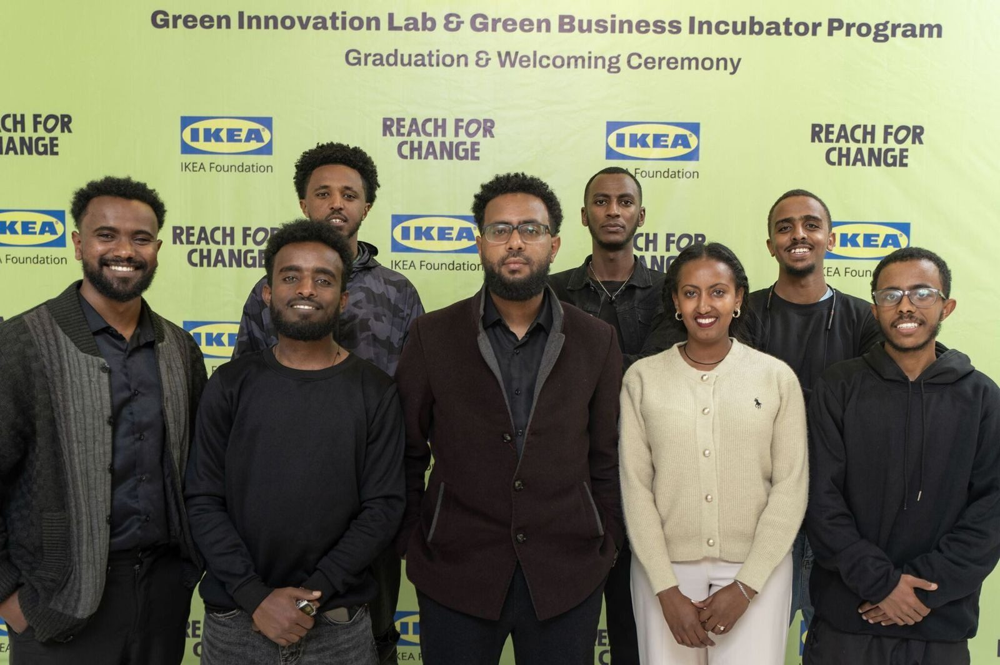
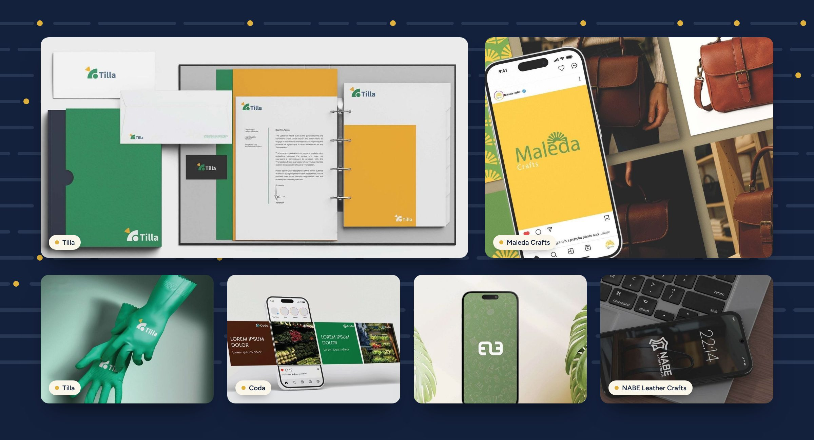
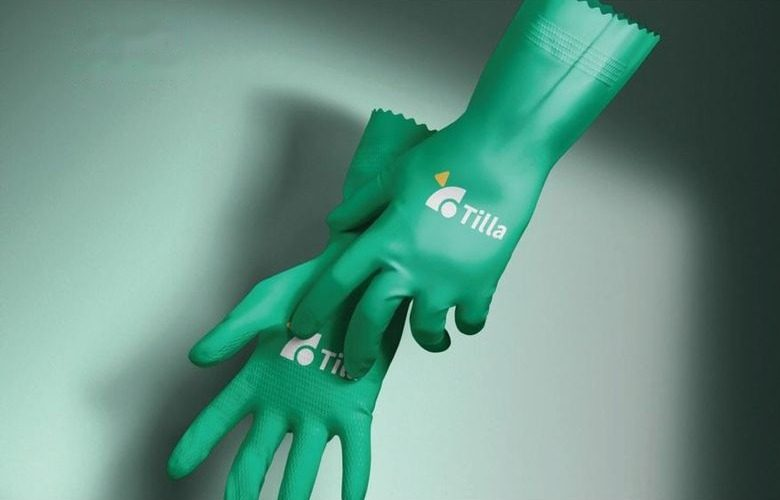
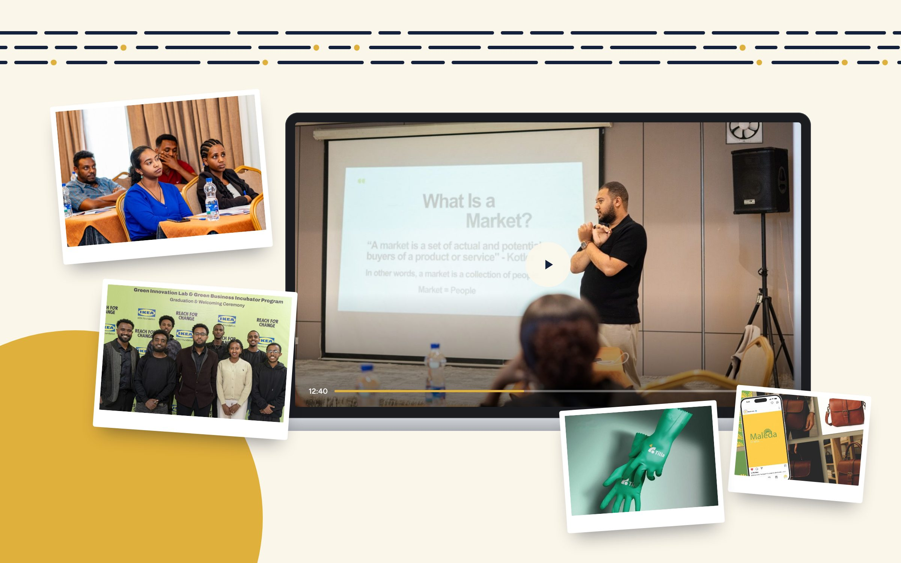
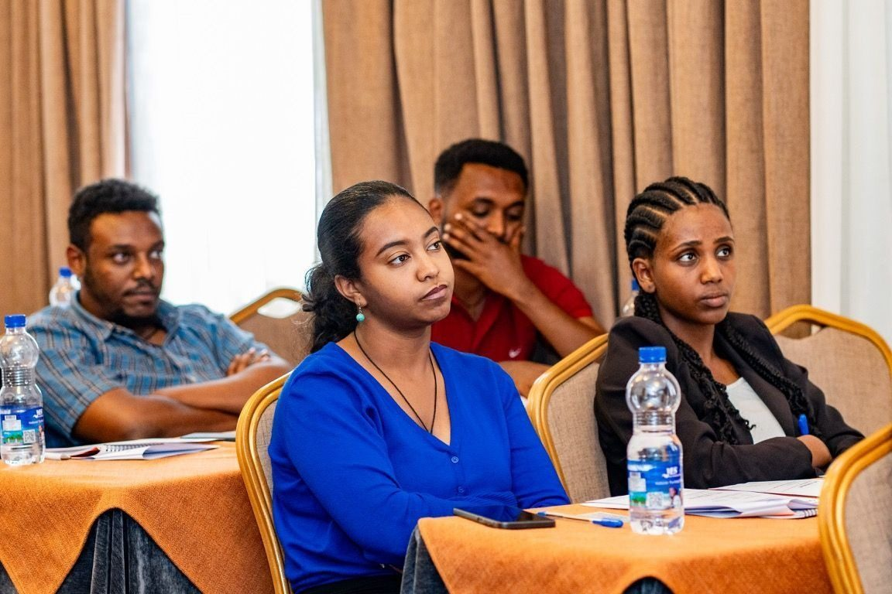
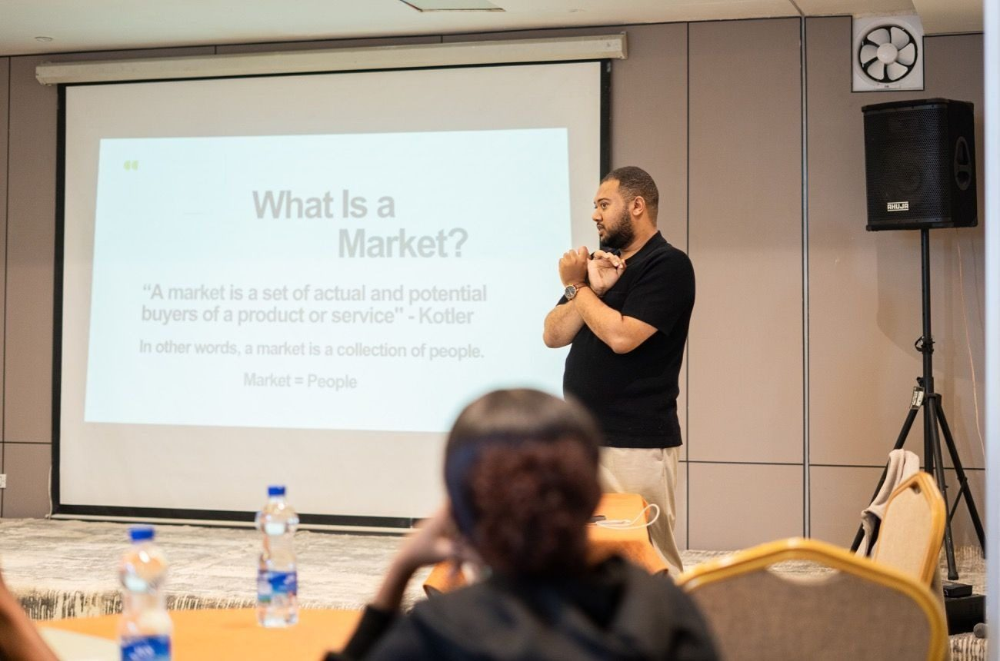

Work · SBCC case note
Good ideas need a good story.
Reach for Change Ethiopia backs young entrepreneurs building green and social businesses, and calls them Change Leaders. Many had strong solutions but couldn’t yet explain them to customers or investors. With the team at Youthopians, I worked on closing that gap.
- Client
- Reach for Change Ethiopia
- Programmes
- Green Innovation Lab and Green Business Incubator, supported by the IKEA Foundation
- Discipline
- Capacity building, brand and communication, documentation
- When
- 2024 to 2026

At a glance
- Brand auditsWhere each venture stood: name, look, message and channels.
- Workshops and videoA modular toolkit taught in the room and on screen.
- Identities and decksBrand identities and investor-ready pitch decks.
- Events and headshotsCeremonies documented, leadership photographed.
The problem
Strong solutions, quiet brands.
The Change Leaders had technical solutions that worked: waste and circular businesses, social ventures, new products. What they lacked was the branding, the digital presence and the communication skills to attract customers and investment.
Seen as a behaviour change problem, the behaviour we needed was the entrepreneur’s own: describing the business clearly, showing it consistently, and pitching it with confidence. That takes skills, tools and practice, not just a logo.
The approach
Audit, learn, build, show.
- AuditA brand audit of each venture: what it says and shows today.
- LearnWorkshops and educational videos on markets, brand and storytelling.
- BuildIdentities, social templates and investor-ready pitch decks.
- ShowCeremonies and events documented, so the progress is seen.
The toolkit was modular, so each Change Leader could take what their business needed rather than one fixed course.
The brands
From audit to identity.

Built to be used, not admired
Each identity came with the things a small team actually uses: stationery, packaging marks, social templates and a pitch deck. A glove, a bag or an Instagram post should all say the same thing about the business.

The toolkit
Taught in the room, kept on screen.
Workshops took Change Leaders through the basics that most business training skips: what a market is, who their customer is, and how to say what they do. Educational videos carried the same lessons, so teams could go back to them after the room emptied.

On the record
Progress people can see.
We organised and documented Reach for Change events, managing logistics and coordination, and photographed and filmed them for post-event communication: milestones, success stories and outcomes. We also made corporate headshots for the team and leadership.


What we made
One toolkit, many outputs.
Results
The programme this work serves.
These are Reach for Change’s own published figures. They show the scale of the programmes the work supported; they are not a measure of the brand and communication work alone.
The relationship kept going. In 2026 Reach for Change commissioned further work: documentation of the Building Waste and Circular Enterprises experience-sharing visits, and branding, marketing strategy and photography for the Green Business Incubator 2026.
Sources: Ethiopian News Agency, Stakeholders praise green entrepreneurs; Reach for Change Ethiopia, Building Waste and Circular Enterprises in Ethiopia; Shega, Reach for Change, IKEA Foundation to incubate green entrepreneurs (April 2024).
The takeaway
Teach the skill, then build the tool.
A logo handed over at the end of a programme fades. A founder who can explain their business, and has the tools to show it, keeps going. That order, skill first and then the tool, is how I approach capacity building.
If you run a programme for entrepreneurs, or you are one, that’s the conversation I’d start with.